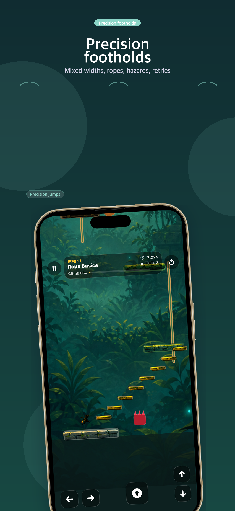
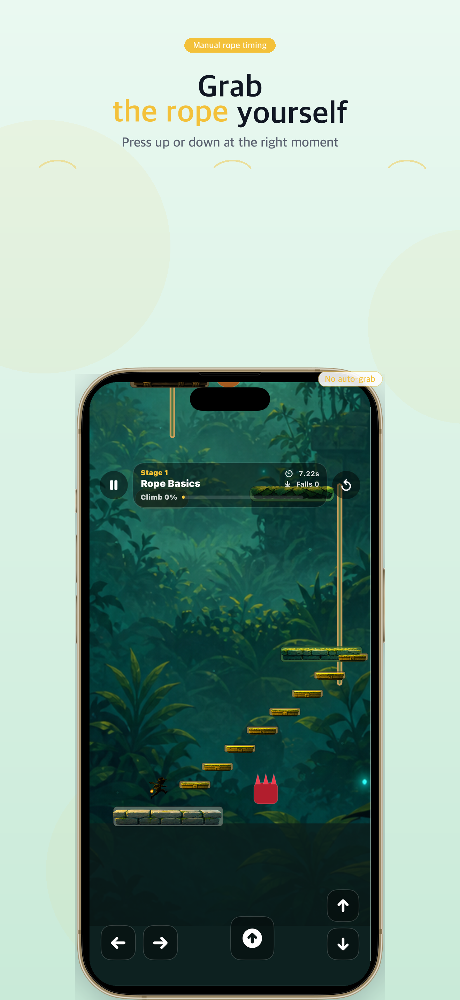
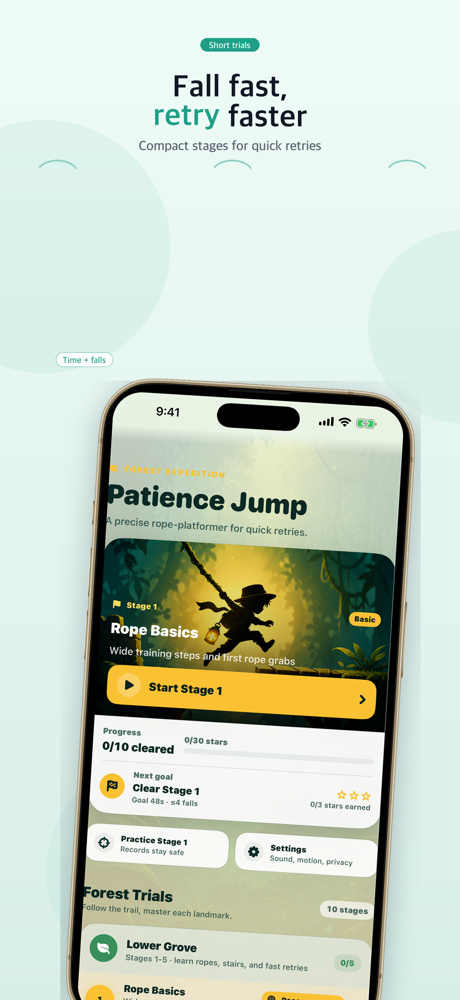
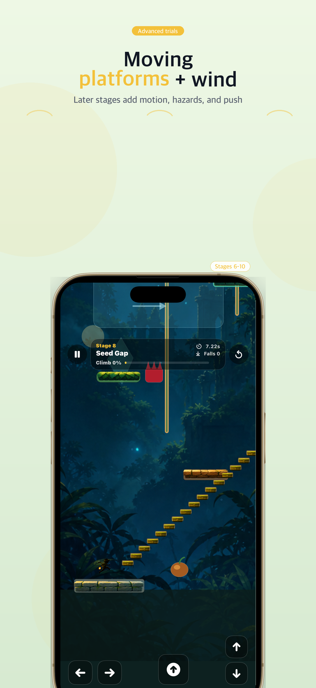

iOS precision platformer
Patience Jump
Manual rope grabs, mixed-width footholds, quick falls, and skill-based retries across ten compact forest trial stages with stars, practice runs, moving platforms, and wind zones.

Built for quick, skill-based retries
Manual rope timing
Touching a rope is not enough. Press up or down at the right moment to grab and climb.
Ten forest trials
Clear stages, earn stars, unlock the next route, then face moving platforms and wind zones in later trials.
Practice safely
Warm up on the recommended stage without changing campaign records, then chase better times and fewer falls.
Screenshots


